The following table contains the model parameters for the pn-junction diode model.
| Name | Symbol | Description | Unit | Default |
| Is | saturation current | 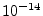 | ||
| N | 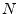 | emission coefficient | ||
| Isr | recombination current parameter | |||
| Nr | emission coefficient for Isr | |||
| Rs | ohmic resistance | |||
| Cj0 | zero-bias junction capacitance | |||
| M | grading coefficient | |||
| Vj | junction potential | 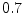 | ||
| Fc | 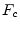 | forward-bias depletion capacitance coefficient | ||
| Cp | linear capacitance | |||
| Tt | transit time | 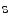 | ||
| Bv | reverse breakdown voltage | |||
| Ibv | current at reverse breakdown voltage | |||
| Kf | 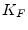 | flicker noise coefficient | ||
| Af | 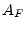 | flicker noise exponent | ||
| Ffe | flicker noise frequency exponent | |||
| Temp | device temperature |
|
||
| Xti | 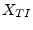 | saturation current exponent | ||
| Eg | energy bandgap | eV | ||
| Tbv | Bv linear temperature coefficient | |||
| Trs | Rs linear temperature coefficient | |||
| Ttt1 | Tt linear temperature coefficient | |||
| Ttt2 | Tt quadratic temperature coefficient | |||
| Tm1 | M linear temperature coefficient | |||
| Tm2 | M quadratic temperature coefficient | |||
| Tnom | 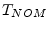 | temperature at which parameters were extracted |
|
|
| Area | default area for diode |
The current equation of the diode and its derivative writes as follows:
| (10.10) | ||
| (10.11) |
The complete MNA matrix entries are:
| (10.12) |
The voltage dependent capacitance consists of a diffusion capacitance, a junction capacitance and an additional linear capacitance which is usually modeled by the following equations.
| 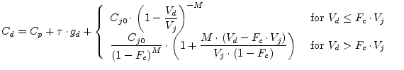 | (10.13) |
The S-parameters of the passive circuit shown in fig. 10.4 can be written as
 |
(10.14) | |
| (10.15) |
with
| (10.16) |
The thermal noise generated by the series resistor is characterized by the following spectral density.
| (10.17) |
The shot noise and flicker noise generated by the DC current flow through the diode is characterized by the following spectral density.
| (10.18) |
Thus the noise current correlation matrix can be formed. This matrix
can be easily converted to the noise wave correlation matrix
representation using the formulas given in section
2.4.2 on page ![[*]](crossref.png) .
.
| (10.19) |
An ideal diode (pn- or schottky-diode) generates shot noise. Both
types of current (field and diffusion) contribute independently to it.
That is, even though the two currents flow in different directions
("minus" in dc current equation), they have to be added in the noise
equation (current is proportional to noise power spectral density).
Taking into account the dynamic conductance  in parallel to the
noise current source, the noise wave correlation matrix writes as
follows.
in parallel to the
noise current source, the noise wave correlation matrix writes as
follows.
| (10.20) |
Where is charge of an electron, 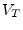 the temperature voltage,
 the (dynamic) conductance of the diode and its junction
capacitance.
the (dynamic) conductance of the diode and its junction
capacitance.
To be very precise, the equation above only holds for diodes whose
field and diffusion current dominate absolutely (diffusion limited
diode), i.e. . Many diodes also generate a
generation/recombination current (
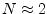), which produces shot
noise, too. But depending on where and how the charge carriers
generate or recombine, their effective charge is somewhat smaller than
. To take this into account, one needs a further factor 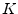.
Several opinions exist according the value of . Some say 1 and 2/3
are common values, others say  with and being bias
dependent. Altogether it is:
with and being bias
dependent. Altogether it is:
Remark: Believing the diode equation
is the whole truth, it is logical to define  ,
because at the conductance
,
because at the conductance  of the diode must create
thermal noise.
of the diode must create
thermal noise.
Some special diodes have additional current or noise components (tunnel diodes, avalanche diodes etc.). All these mechanisms are not taken into account in equation (10.21).
The parasitic ohmic resistance in a non-ideal diode, of course, creates thermal noise.
Noise current correlation matrix (for details on the parameters see above):
| (10.22) |
This section mathematically describes the dependencies of the diode
characterictics on temperature. For a junction diode a typical value
for is  , for a Schottky barrier diode it is
, for a Schottky barrier diode it is  . The
energy band gap at zero temperature
. The
energy band gap at zero temperature  is by default
is by default  eV. For
other materials than Si, eV (for a Schottky barrier diode),
eV (for Ge) and eV (for GaAs) should be used.
eV. For
other materials than Si, eV (for a Schottky barrier diode),
eV (for Ge) and eV (for GaAs) should be used.
| (10.23) | ||
| 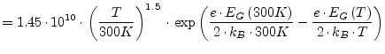 | (10.24) | |
| (10.25) |
with experimental values for Si given by
| 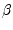 | ||
| 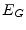 |
The following equations show the temperature dependencies of the diode
parameters. The reference temperature  in these equations
denotes the nominal temperature specified by the diode
model.
in these equations
denotes the nominal temperature specified by the diode
model.
![$\displaystyle = I_S\left(T_1\right)\cdot \left(\dfrac{T_2}{T_1}\right)^{X_{TI} ...
...00K\right)}{N\cdot k_B\cdot T_2}\cdot \left(1 - \dfrac{T_2}{T_1}\right)\right]}$](img1302.png) |
(10.26) | |
 |
(10.27) | |
| (10.28) | ||
| (10.29) |
Some additionial temperature coefficients determine the temperature dependence of even more model parameters.
| (10.30) | ||
| (10.31) | ||
| (10.32) | ||
| (10.33) |
The area factor  used in the diode model determines the number of
equivalent parallel devices of the specified model. The diode model
parameters affected by the
used in the diode model determines the number of
equivalent parallel devices of the specified model. The diode model
parameters affected by the  factor are:
factor are:
| (10.34) | ||
| (10.35) | ||
| 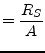 | (10.36) |